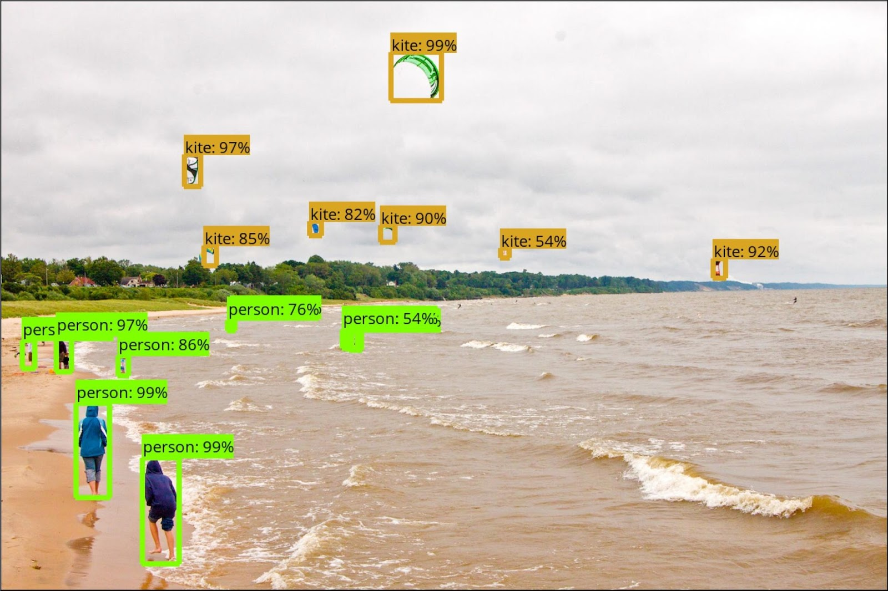
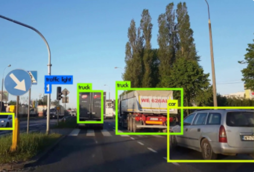

OVERALL PROCESS
-05.png)
Argo is an augmented reality application that helps people to learn a new language by challenging them to identify objects around them in the language that they want to learn It facilitates peer-to-peer learning that is engaging, fun and takes advantage of user’s environment
Identify Objects
The app should be able to recognize real-world objects using camera and create label in different languages
Generate Label
The object recognization and label generating should be in real time as the users scans their surroudings by camera
Tensorflow Object Detection API
YOLO Real-Time Object Detection
-09.png)
-10.png)
Casual Language
Learners
Mobile
Gamers
Travelers
7 Paticipants
4 Female Paticipants
3 Male Paticipants
Need to learn a new language when they move to a place where most people speak in a different language.
Some others said that it was a mandatory course in college. Motivated due to a TV shows or sports commentary.
Duolingo is the most popular language learning app because it is easy to learn and teaches language from scratch
Apps don’t provide in depth knowledge
Too many reminders and same kinds of questions
There is no one to practice the language with.
-16.png)
-17.png)

According to the table, users found task 4 and task 6 very difficult. In the following pages, we have outlined some of the important insights that we gathered from user testing round 1 and came up with some recommendations for medium-fidelity prototype.
Prototype should be made more efficient or the task should be a little more ditailed.
Matching should be in less number of steps.
'Get started' button was confusing
For a great AR experienc, homepage should start with a camera.
Change 'nearby friends' to 'invite nearby friends to play', and change 'friends' to 'all friends'.
According to the table, users found task 4 and task 6 very difficult. In the following pages, we have outlined some of the important insights that we gathered from user testing round 1 and came up with some recommendations for medium-fidelity prototype.
Make the 'start game' button look more prominent by changing colors or adding icons to it
Could have some instructions about the tap and tap matching method before start the game.
The label should be shown for the image after successfully matched instead of disappearing.
Change the hamburger menu.
__________